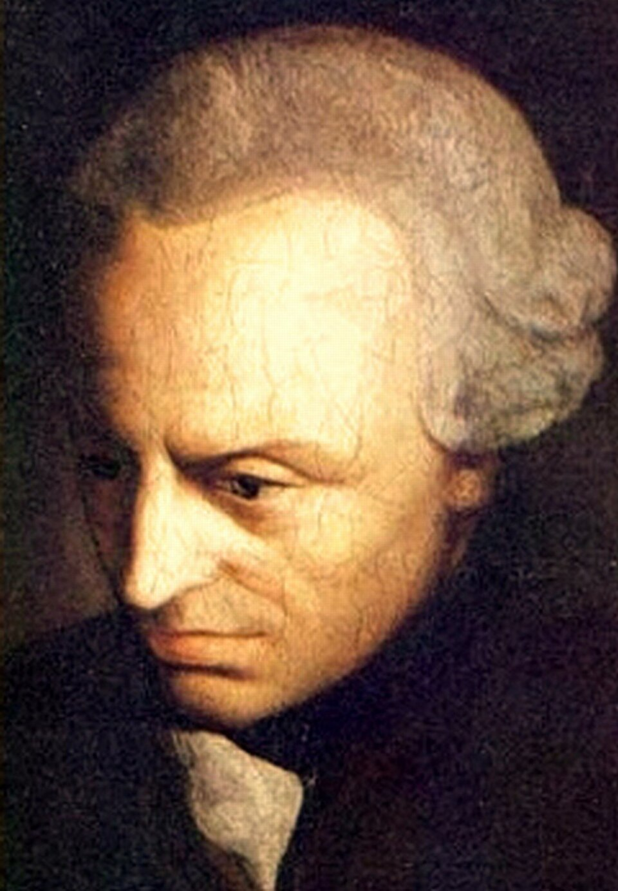

Kant
Immanuel Kant · 1724–1804
«Il cielo stellato sopra di me e la legge morale in me»
- Autonomia
- Imperativo
- Critica
- Cielo stellato
💬La massima
Ritratto di Immanuel Kant (1724–1804), dipinto di scuola di Anton Graff, circa 1790, pubblico dominio:
«Due cose riempiono l'animo di ammirazione e venerazione sempre nuova e crescente, quanto più spesso e più a lungo la riflessione si occupa di esse: il cielo stellato sopra di me, e la legge morale in me.» — Immanuel Kant, Critica della ragion pratica, conclusione (1788). Citazione verificata: chiusura letterale dell'opera, non apocrifo.
🔍Commento
Kant la pone come ultima pagina del suo secondo grande libro, ed è una frase-simbolo di tutto il suo sistema. Le due cose stanno su piani opposti e insieme inseparabili.
Il cielo stellato: conoscere. Il cielo stellato è la dimensione del conoscere: la prima Critica aveva mostrato che la ragione può capire solo ciò che l'esperienza le porge davanti, e che spazio, tempo e causalità sono gli occhiali con cui vediamo, non il mondo "in sé".
L'uomo davanti al cosmo. Davanti all'immensità dell'universo, dice Kant, l'uomo si sente una «creatura animale» che restituirà al pianeta la materia prestatagli: la grandezza cosmica annulla la nostra importanza fisica.
La legge morale: agire. Ma la legge morale è la dimensione dell'agire: comincia dal mio io indivisibile e mi mostra come essere di valore in un mondo di libertà e dovere, non di materia. È il paradosso kantiano: più l'universo mi sminuisce, più la moralità mi eleva.
Vedere, non credere. L'ultima parola della frase, inoltre, non è "credere" ma "vedo": per Kant la morale non è un dogma rivelato ma qualcosa che la ragione umana legge dentro di sé, come si legge una stella in cielo. Da qui il celebre binomio: la ragione è teoretica quando guarda fuori, pratica quando guarda dentro.
📌Sintesi del pensiero
- Rivoluzione copernicana: non è la conoscenza a doversi adeguare agli oggetti, ma gli oggetti a doversi adeguare alle forme della nostra conoscenza (spazio, tempo, categorie).
- Fenomeno e noumeno: conosciamo i fenomeni (come ci appaiono); la "cosa in sé" resta oltre ogni esperienza possibile.
- Imperativo categorico: «Agisci solo secondo quella massima che puoi volere diventi legge universale» — e la seconda formula: trattare l'umanità sempre anche come fine, mai solo come mezzo.
- Autonomia: la moralità non viene dall'esterno (Dio, Stato, natura) ma dalla ragione che detta legge a se stessa; da qui la dignità.
- Postulati pratici: libertà, immortalità dell'anima e Dio non si dimostrano ma si postulano come condizioni perché la morale abbia senso.
- Il sublime e il giudizio: nella Critica del giudizio Kant collega il cielo stellato alla potenza illimitata della natura e la legge morale alla dignità della libertà, congiungendo natura e libertà.
⌛Contesto storico
Movimenti che lo hanno influenzato: il razionalismo di Leibniz e Wolff (di cui eredita l'ambizione sistematica), lo scetticismo empirista di Hume (la scintilla), la rivoluzione scientifica di Newton (lo schema del Critica è modellato sulla Fisica aristotelica), l'Illuminismo tedesco e il pietismo, l'idealismo morale di Rousseau (che gli insegna che la dignità umana conta più di ogni conoscenza). Movimenti che ha trasmesso: l'idealismo tedesco (Fichte, Schelling, Hegel, che nascono tutti da Kant), il neokantismo di Marburgo e Baden (Cohen, Natorp, Windelband), la fenomenologia di Husserl.
L'eredità novecentesca. In parte l'esistenzialismo (Kierkegaard e i successori reagiscono proprio all'«etica kantiana»), l'etica deontologica del Novecento (Rawls, Habermas e la scuola di Francoforte), e l'idea stessa di diritti umani universali come si legge nella Dichiarazione dei diritti dell'uomo del 1789.
🧠Quiz
Rispondi con es. 1B 2A 3C 4B 5A.
1 In quale opera compare la massima di oggi?
- A Critica della ragion pura
- B Critica della ragion pratica
- C Critica del giudizio
2 Quale evento "sveglia" Kant dal suo sonno dogmatico?
- A Le scoperte di Galileo
- B La lettura di Rousseau
- C Il dubbio di Hume sulla causalità
3 L'imperativo categorico impone di:
- A trattare l'umanità sempre anche come fine, mai solo come mezzo
- B seguire le conseguenze più utili
- C obbedire alle leggi dello Stato
4 Che cosa la ragion pratica postula senza dimostrarlo?
- A L'esistenza di Dio provata geometricamente
- B Libertà, immortalità e Dio come condizioni della morale
- C Nessuna cosa trascendente
5 Il "cielo stellato" corrisponde, nella coppia kantiana, a:
- A il lato teoretico della ragione, la conoscenza
- B il lato pratico, la morale
- C il giudizio estetico
✅Soluzioni — tocca per vedere
- B — chiude proprio la Critica della ragion pratica (1788).
- C — Hume, con il dubbio sull'idea di causalità necessaria.
- A — formula della umanità come fine.
- B — postulati, non dimostrazioni: Kant rinuncia a provare Dio con la speculazione.
- A — il cielo stellato è la conoscenza teoretica; la legge morale è il polo pratico.
🔁Ripasso
- Postulato ≠ dimostrazione: Kant non prova che Dio esiste; dice che, se la morale ha senso, devo poter supporre libertà, durata oltre la morte e un compenso finale. Sbaglia chi risponde 4A: la Critica della ragion pura toglie proprio ogni prova speculativa di Dio.
- Imperativo categorico vs ipotetico: «se vuoi X, fai Y» è ipotetico (dipende da un desiderio); «fai Y» perché è dovere in sé è categorico, vale per chiunque, sempre.
- Teoretico vs pratico: il cielo stellato riguarda ciò che la ragione può conoscere (con i suoi limiti); la legge morale riguarda ciò che la ragione può volere. Non confondere: la morale non viene dal cielo, ma dal dentro.
Hai risposto? Scrivi qui le tue scelte (es. 1B 2A 3C 4B 5A) e ti correggo con un ripasso mirato sui punti sbagliati.